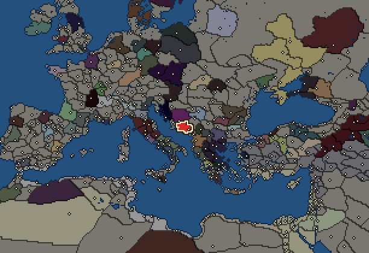
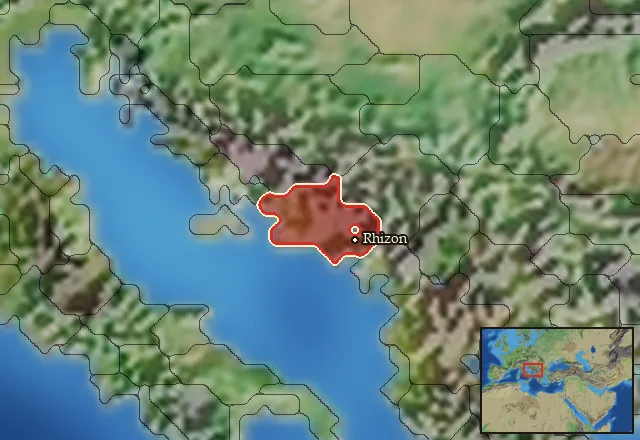

RTR: Imperium Surrectum
RTR: Imperium SurrectumArdiaei


- difficulty Difficult
- Illyrian culture
- believes
 Illyrian
Illyrian - 1 settlement
- capital Rhizon
- 4,700 manpower
- 2 characters
- 15 faction units
- 434 regional units
The campaign brief
"With their light infantry they (the Aitolians) hastened to occupy some rising ground in front of their camp, which nature had made easily defensible. A single charge, however, of the Illyrians, whose numbers and close order gave them irresistible weight, served to dislodge the light-armed troops, and forced the cavalry who were on the ground with them to retire to the hoplites." – Polybios, Battle of Medion
This is our sea. Before the Greeks came and spread their colonies up and down her shores, she nourished us. While sometimes we must retreat to stay safe from invaders, up into the rocky crags of the inland mountains, eventually we always return to the sea and the bounty she brings.
The Greeks are part of this bounty. The trade their colonies and settlements bring fills our hoards with gold and silver. Sometimes this trade is conducted in friendship, other times, not so much. Only those with a properly aggressive temperament deserve to be nourished. Our sea has taught us that. Greek merchants can be made to part with their goods on open waters with the proper encouragement. Our ships can go back to their settlements, their farms, their vineyards, and, well, share … in their 'superior' culture. What is the point in the gods giving them such wealth, if it is not there specifically for us to take? That which carries risk and takes effort to obtain is surely worth more than that which does not. Surely, one of those Greek philosophers must have said something to that effect. I’ll make sure to ask them, next time I 'visit' their shores.
The Greeks have many funny notions of superiority. They think the Great King Alexandros exemplifies – their – virtues. What foolishness. His conquest of the world better reflects – our – virtues! For it was our ancestors that hammered Makedon and forged it into the weapon it became. It was not Greeks who broke Argead kings over their knees; no, it was Bardyllis, King of the Dardanians, who humbled them on the field of battle! It was Bardyllis whom the Tyrant of Syracuse called upon for aid in subduing the tribes of Epeiros. And later, when the mighty Pyrrhos Aeacides was but an infant on the run from Cassander of Makedon, who did he turn to for protection? Glaukias of the Taulantians, under whose tutelage the great campaigner would grow up.
The Greeks may call us bandits and pirates, but we can form a battle line just as strong as they can, and our mercenaries bring a ferocity that is well-valued by the warring successors of Alexandros the Makedonian. And yet, the world at large does not truly respect us. They may fear the silence of our boats at night, but they do not fear the thunder of our armies on the march. To truly change that, we must become like Bardyllis. Bardyllis united many tribes under his leadership; perhaps we should consider uniting them all. To the north and west lie the Liburnians and Delmatae; tribes with their own nautical traditions and connections to the people in Italy across the sea. To the east lie the Dardanians and Paoinians; often subdued by Alexandros, they may be tempted by a strong leader to throw off the Makedonian yoke. To the north are the Scordisci; a remnant of the Keltoi wave that washed over all of us years ago, they could provide us with the fiercest of warriors. And finally, to the south, the heir of Pyrrhos the Molossian faces a rebellion by the Taulantians under King Mytilos.
The Greek world is in turmoil due to the wars of the Diadochi and the invasions of the Keltoi. There will never be a better time for us to unite and make our mark on the world. Across the sea, the Romans are doing just that – hammering the tribes of Italy into a united force and humbling the Greek cities on their shores. We must do the same if we want to sail the world and make its riches our own. We are the Ardiaei, proud Illyrians all!
Starting diplomacy
Allied with (1):  Illyrian Kingdom
Illyrian Kingdom
Trade agreements with (1):  Illyrian Kingdom
Illyrian Kingdom
At peace with every other faction.
Like every faction, it is also at war with the  Free Peoples, who hold every settlement no faction does.
Free Peoples, who hold every settlement no faction does.
Faction mechanics
From the game's own guide. See also the other game guides.
Special Mechanics
Ardiaei has a mercenary centre in Lissos, check its Region Information Building for more details.
Military reforms
Illyrian Epilektoi reforms requirements: Control 15 cities.
Unlocks: Illyrian Epilektoi
Starting settlements
Ardiaei begins with 1 settlement and 4,700 manpower.
What is already built in each settlement
Rhizon, in Ardiaea: Small Treasury, Governor's Villa, Wooden Palisade, Homeland, Region Information Scroll, Roads, Local Barter, Trade Port, Lumber Camp (Rural), Irrigation Ditches (Crops), Basic Armoury, Cisterns (Sanitation)
Homeland
Ardiaei's homeland is 1 region. Only there can it install the Homeland government (more on homelands).

Starting characters
| Name | Role | Age | Name | Role | Age | ||||||
|---|---|---|---|---|---|---|---|---|---|---|---|
| Pleuratos | General | 33 | Ballaios | General | 21 |
Reforms
For every faction: Military innovations have arrived!, Second wave of military innovations have arrived!.
Units you can recruit
The same as in the main campaign.